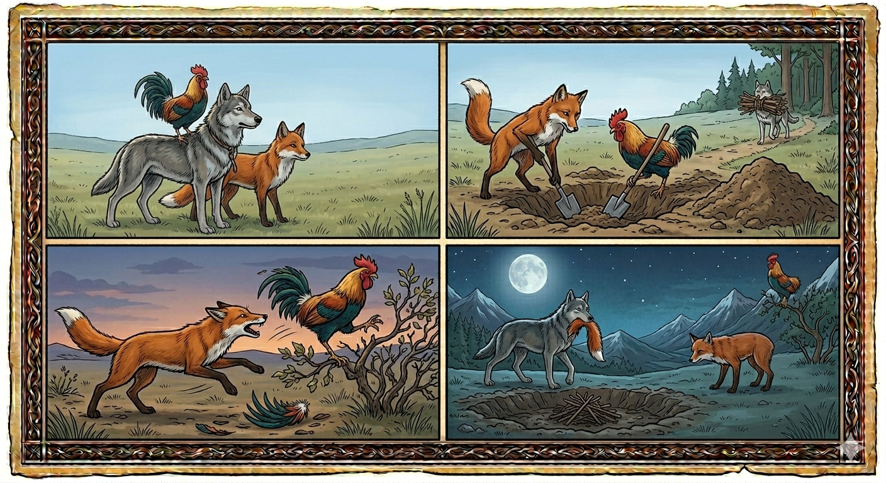

И.А. Дахкильгов. Хьехаме дувцарш - поучительные рассказы-притчи.
И.А. Дахкильгов. Хьехаме дувцарш - поучительные рассказы-притчи. Из ингушского фольклора.

Вай юрт юлларгьяц
Цкъа вӀашагӀакхийтта хиннад жӀалеи, боргӀали, цогали. Долхо-ош, эрий ара бийса яьккха дийзад цар. ТӀаккха Ӏуйранна дагабаьннаб доттагӀий. ЖӀале аьннад: - Йовсараш санна лела йиш яц вай. Адамо санна юрт Ӏойилла еза вай. - Мишта юл вай из? - хаьттад цхьанне. - Цхьа тол а аьхка, дахаргда вай. ЦӀи ювзаеш, наггахьа со Ӏахаш, нагахьа боргӀал Ӏахаш моттиг ергья вай. Гаьннара наха кӀур бӀаргабейча, Ӏехаш боргӀалаши жӀалеши хилча, тоъам беций юрт йилла яьнналга наха дӀаха, - жӀале аьлча, берригаш раьза хиннаб. БоргӀалгеи цогалгеи оаш тол ахкалаш аьнна, жӀали хьунагӀа дахад дахча да. Шоаш цхьаь дисача, цогала дог эттад боргӀал яа. ТӀакхоссаденнад цогал. Цун кара цӀог а дусаш, боргӀал кӀалхара ийккхай. Цхьан кӀотарга тӀа хайнай из. Хьаденача жӀалена бӀаргадейнад из сурт. Фудмалад хайначул тӀехьагӀа, жӀале, тӀакхийтта, цогала цӀог даьккхад. Цогал гаьнна дӀаюстара ийккхад. Ший цӀоган томарах мотт а хьекхаш аьннад цо: - ВӀаший цӀогарч доахаш вай леле, вай юрт юлларг ма яц.
РУССКИЙ
Мы села не обоснуем
Как-то подружились собака, петух и лиса. Отправились они в дорогу. В диком поле их настигла ночь. Продрогли они и утром начали советоваться. Собака предложила: - Мы не должны плутать по свету, словно бродяги. Давайте, подобно людям, обоснуем село. - А как это сделать? - поинтересовались друзья. - Выроем землянку, - начала объяснять собака, - и будем в ней жить. Разожжем очаг. Я буду лаять, петух будет кукарекать. Издали увидят люди поднимающийся дым, услышат лай и кукареканье и тогда они поймут, что появилось новое село. Все согласились с этим. Собака предложила лисе и петуху копать землянку, а сама пошла в лес по дрова. Когда собака ушла, лиса захотела съесть петуха. Набросилась она на него. Петух увернулся и взлетел на ближайший куст. Но лиса успела отодрать его хвост. Вернулась собака и увидела петуха на кусте, а хвост на земле. Узнав про лисье коварство, собака набросилась на нее и оторвала лисий хвост. Лиса отбежала далеко в сторону. Облизывая рану, она сказала: - Если будем так рвать друг другу хвосты, то села мы не обоснуем.
ENGLISH
We won't be settling the village
One day, a dog, a rooster and a fox became friends. They set off on a journey. Night fell whilst they were in an open field. They shivered with cold, and in the morning they began to discuss what to do. The dog suggested: 'We mustn't wander about the world like vagabonds. Let's settle down in a village, just like people do.' 'But how do we do that?' asked the friends. 'We'll dig a dugout,' the dog began to explain, 'and live in it. We'll light a fire. I'll bark, and the rooster will crow. From afar, people will see the smoke rising, hear the barking and crowing, and then they'll realise that a new village has appeared.' Everyone agreed. The dog suggested that the fox and the cockerel dig the dugout, whilst she went into the forest to fetch firewood. When the dog had gone, the fox wanted to eat the cockerel. She pounced on him. The cockerel dodged her and flew up onto the nearest bush. But the fox managed to tear off his tail. The dog returned and saw the cockerel in the bush, with its tail lying on the ground. Realising the fox's treachery, the dog pounced on her and tore off her tail. The fox ran off a long way to the side. Licking her wound, she said: 'If we keep tearing each other's tails off like this, we'll never get the village set up.'
НОХЧИЙН
Тхо юьрт а ца оттадийр ду
Цхьана хана вовшашца доттагӀалла лаьцна пхьу, кӀайдакх а, цхьогал а. Некъа тӀе дӀаволавелла уьш. Эрий аренахь буьйса кхаьчна царна. ШаӀъелла уьш, Ӏуьйранна кхетам бан долайелла. Пхьуо аьлла: - Тхо дуьненчохь эмалакаш санна тувла ца деза. Схьадолда, стеган санна, юьрт оттаде вай. - Иза муха дан деза? - хаьттина доттагӀаша. - Барз аха, - хӀоттадеш долавелла пхьу, - тхо цу чохь бехаш хуьр ду. КоьгӀа йогӀар ю. Ас Ӏех бийр бу, кӀайдакхо оь бийр бу. Генна нах хьайна гуш кӀуьр, ла а хезаш Ӏех, оь, тӀаккха кхетар бу цара, керла юьрт хилла хилла аьлла. Массо реза хилла хӀокхуна. Пхьуо цхьогалана-кӀайдакхна тӀе диллина барз ахар, ша хьуна воьдура дечиг эца. Пхьу дӀаваьллачохь, цхьогалана кӀайдакх юу лаьара. Цо цуьнга дӀаэккхийна. КӀайдакхо дехьа а ваьлла, гергара баь тӀе гӀаьттина. Амма цхьогало кхочу тӀаккха, цӀог схьаэккхийна цуьнан. Пхьу юхавирзина, гуш цунна баь тӀехь кӀайдакх, цӀог лаьттахь. Хааделла цхьогалан харцонна, пхьу цуьнга дӀаэккхийна, цхьогалан цӀог юха эккхийна. Цхьогал генна дӀаэккхийна. Шен чов лестош, аьлла цо: - Иштта вовшашна цӀога эккхабеш хилахь, тхо юьрт а ца оттадийр ду вай.
ПОГОВОРКИ
Дукха Ӏийха боргӀал цогало йихьай. Много кукарекавший петух угодил в пасть лисицы. A rooster that crowed too much ended up in the fox's jaws. Дукха Ӏехна боргӀал цхьоьгало йаьхьна.ЗӀамигача сийго юрт йоагаяьй. Маленькая искорка все село спалила. A tiny spark burned down the whole village. Жиммачу суйно йурт йагайина.Ханал хьалха кхайка боргӀал яь чу яхийтай. Не вовремя кукарекавший петух угодил в котел. The rooster that crowed at the wrong time ended up in the pot. Хенал хьалха кхайкхина боргӀал яй чу йахийтина.Хар баьнна хи михо атта божабу. Дуплистое дерево легко ветер валит. A hollow tree is easily felled by the wind. Хара йаьлла дитт мохо атта дожа до.Хьалхе а ков-карт чудерзадаьчо цӀенош а даьд. Дом построил тот, кто сначала огородил свой двор. The house was built by the man who first fenced in his yard. Хьалха ков-керт чудерзиначо цӀенош а дина.Цхьан йоахаро юрт вӀашагӀа лотаяьй. Из-за одной сплетни все село передралось. One piece of gossip set the whole village fighting. Цхьана эладитано йурт вовшах латийна.Цхьан сийго юрт лотаяьй (йоагаяьй). Одна искра все село спалила. One spark burned down (set fire to) the whole village. Цхьана суйно йурт латайина (йагайина).ЦӀенош де этта саг паргӀата хургвац. Покоя лишится тот, кто начнет дом строить. One who takes on building a house will find no rest. ЦӀенош дан хӀоьттина стаг паргӀат хир дац.Ший коа наӀар тӀа боргӀал а, жӀали а майрагӀа хул. У своего плетня и петух, и собака храбрее. By his own fence, even a rooster and a dog are braver. Шен кевна неӀар тӀехь боргӀал а, жӀаьла а майрах хуьлу.Эбаргаша юрт йиллаяц. Абреки села не основали. Outlaws never founded a village. Обаргаша йурт йиллина яц.Юрта даьр а дисад, юрто даьр а дисад. Сделанное селу – осталось, сделанное селом – тоже осталось (неотомщенным). What is done to the village stays unavenged; what the village does also stays unavenged. Йуьртан динарг а дисна дац, йуьрто динарг а дисна.Юрта йисте кхийнача сагал юрта юкъе кхийна пхьу тол. Пес, выросший в центре села, лучше, чем человек, выросший на отшибе. A dog raised in the heart of the village is better than a man raised on its outskirts. Йуьртан йисте кхиъначу стагал йуьртан йуккъе кхиъна пхьу тоьлу.